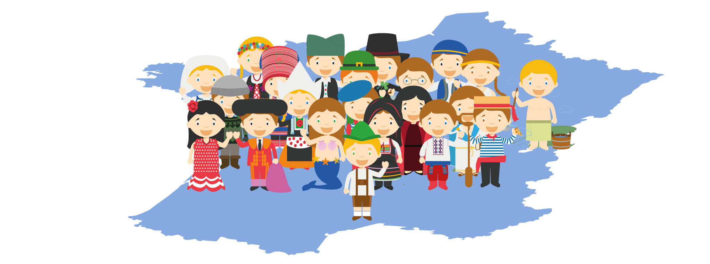

Vous êtes citoyen européen et vous vivez en France ?
Alors, votez-vous ?
1. Ai-je le droit à voter ?
En France, les citoyens européens peuvent participer uniquement aux élections municipales (les prochaines auront lieu en 2025) et aux élections européennes (les prochaines auront lieu en 2024). Les conditions :
- avoir plus de 18 ans
- être un citoyen de l'UE
- être résident en France
- jouir de ses droits civils et politiques
Pour voter, vous devez vous inscrire sur la liste électorale de votre commune (il existe une liste pour chaque élection).
2. Comment s'inscrire ?
En ligne sur https://www.demarches.interieur.gouv.fr/particuliers/elections-droit-vote-citoyen-europeen-france avec les documents suivants :
- Une copie de carte nationale d'identité ou passeport ou titre de séjour
- Un justificatif de domicile - un document qui confirme votre adresse, tel qu'une facture d'électricité à votre nom (autres options).
- Une déclaration attestant que vous avez le droit de vote dans votre pays d'origine (générateur de document)
ou dans votre Mairie (à déposer sur place ou par la poste). En ce cas, il faut également remplir les formulaires suivants :
- Élections Européennes : Cerfa 12671-02
- Élections Municipales : Cerfa 12670-02
3. Y a-t-il une date limite ?
L'inscription est possible jusqu'à un mois avant une élection, mais...
Pourquoi ne pas commencer à s'impliquer dès aujourd'hui ?
Elections fédérales allemandes, le 26 Sep 2021
Pour voter, vous devez vous inscrire sur la liste électorale de la dernière commune où vous avez vécu en Allemagne. Conditions requises :
- Nationalité allemande et au moins 18 ans
- Avoir vécu au moins trois mois en Allemagne au cours des 25 dernières années.
- Ou (!) en raison d'une familiarité personnelle et directe avec les conditions politiques et d'être affecté par celles-ci (des exemples).
La date limite de réception des demandes est le 5 Sep 2021 (Calendrier).
Délai restant pour s'inscrire : j:h:m:s

Qui vote pour une politique qui rend possible votre vie en France ?
Vous avez suivi les élections présidentielles polonaises de 2020 et comment le traditionaliste Andrzej Duda a battu de justesse le moderniste Rafał Trzaskowski avec 51 % contre 49 % ? La différence était de 422 000 voix. De la part de 4,5 millions de citoyens polonais vivaient à l'étranger, seuls 385 000 se sont inscrits sur les listes électorales. Les expatriés polonais n'ayant pas voté, le gouvernement en place peut poursuivre son programme anti-européen et anti-démocratique.
Cela ne peut pas arriver en France ? Selon l'OCDE, la population étrangère en France est passée de 5,4 % de la population en 2005 à 7,4 % en 2019 - dont plus de 1,9 million de citoyens de l'UE (INED, 2017). On estime que 2,3 millions de Français vivent hors de France. Une élection serrée peut donc également être décidée par le taux de participation ou d'abstention des citoyens français vivant à l'étranger, tandis que des millions de citoyens de l'UE vivant en France doivent rester les bras croisés alors que leur avenir est également décidé (comme avec le Brexit).
Plus nous nous déplaçons et plus la proportion de citoyens vivant à l'étranger augmente, moins il y aura de voix pour s'opposer aux tendances nationalistes et rétrogrades. En tant qu'Européen vivant à l'étranger, vous avez le plus à perdre lorsque les systèmes politiques deviennent nationalistes.
Vous devriez voter chaque fois que vous avez l'occasion.
Oui, on peut : Voter pour l'Europe dans son pays d'origine
Tout comme le droit de vote aux élections du Parlement européen et aux élections municipales dans le pays de résidence ont été initiés par l'Union européenne, l'accès au marché du travail et la liberté de circulation sont également des réussites du projet d'intégration européenne. L'Europe n'est certainement pas parfaite, mais beaucoup de choses que nous considérons comme des acquis aujourd'hui - surtout en tant qu'Européens à l'étranger - sont basées sur l'Union européenne.
Nous constatons tous les jours que l'Europe ne se perpétue pas d'elle-même ou qu'elle doit servir de bouc émissaire pour les politiques nationales défaillantes (également au niveau européen). En tant que citoyens européens à l'étranger, nous sommes toujours exclus des décisions politiques importantes chez nous. Il est donc d'autant plus important de soutenir les partis qui défendent l'Europe dans nos pays d'origine - de préférence des partis qui sont actifs dans toute l'Europe avec un programme européen commun dans tous les pays. De cette manière, vous pouvez également soutenir l'Europe au-delà des frontières.
Vous pouvez voter pro-européen dans votre pays d'origine.
Devenez vous-même actif
Une idée centrale de l'Europe était la préservation de la paix par la coopération au-delà des frontières nationales. Qu'il s'agisse de jumelage de villes, de liens d'amitié internationaux lors d'un séjour Erasmus à l'étranger ou de la coopération d'entreprises de différents pays à des projets de recherche européens, l'idée européenne est de forger des liens.
Plus nous nous connaissons, plus nous nous soutenons et plus nous travaillons ensemble, plus ce réseau de connexions se renforce. Que ce soit au niveau politique, associatif ou privé : en tant qu'Européen à l'étranger, vous pouvez vous-même établir de nombreuses connexions et contribuer ainsi à une meilleure Europe. Les associations qui encouragent les jumelages de villes, les groupes d'échanges linguistiques et culturels internationaux ou la promotion de l'idée européenne dans la politique française - chaque contribution compte et fait avancer l'idée européenne un peu plus.
Impliquez-vous pour plus d'Europe !